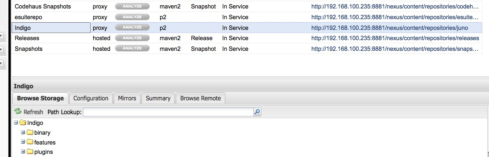

使用Maven和tycho构建OSGi插件项目
介绍Tycho插件
自动构建OSGi Plugin项目，一直以来就是个头疼的问题。直到 Tycho 的出现,这些都不在成为问题了。用它你可以很轻松来构建Eclipse插件(Eclipse Plugin) , Eclipse features , Eclipse的更新站点(Update Site)以及可以直接执行的Eclipse产品(Eclipse Product)。 Tycho插件将会直接使用Eclipse项目中MANIFEST.MF中所包含的依赖信息。这样依赖pom.xml文件就会很小。
介绍Nexus私服
Nexus的OSS版是完全免费的Maven私服。很多企业都在使用他，我们也赶个热闹，用它来构建我们团队内部的私服。在默认情况下Nexus OSS版是不支持eclipse 推出的p2这个仓库的，而Tycho就是依赖这种仓库。所以为了让他能和Tycho配合工作我们让Nexus加上这种能力。 万幸的是sonatype已经开发出了 nexus-p2-repository-plugin ， nexus-p2-bridge-plugin 这两个插件，他们为Nexus加上这两种能力 。我们只需要安装这两个插件就好了。 具体操作请参考： Nexus OSGi Experimental Features P2 Repository Plugin
构建Eclipse 插件
好了既然万事具备了，我们就开始用Tycho来构建Eclipse 插件了。现在我手边有一个通过Eclipse 创建名为org.gunn.autobuild.tycho.bundle的Plugin项目。我要对他进行构建。 首先我们需要一个pom.xml文件。我们可以通过如下命令来生成：
mvn org.eclipse.tycho:tycho-pomgenerator-plugin:generate-poms -DgroupId=org.gunn.autobuild.tycho
这个时候我就得到了如下结构的pom.xml
<?xml version="1.0" encoding="UTF-8"?> <project xsi:schemaLocation="http://maven.apache.org/POM/4.0.0 http://maven.apache.org/xsd/maven-4.0.0.xsd" xmlns="http://maven.apache.org/POM/4.0.0" xmlns:xsi="http://www.w3.org/2001/XMLSchema-instance"> <modelVersion>4.0.0</modelVersion> <groupId>org.gunn.autobuild.tycho</groupId> <artifactId>org.gunn.autobuild.tycho.bundle</artifactId> <version>1.0.0-SNAPSHOT</version> <packaging>eclipse-plugin</packaging> </project>
这个时候如果你输入 mvn package肯定是会出错的。出错的原因是我们还没有把Tycho插件加入进来。 所以我们还需要一个如下如下结构的pom.xml.
<?xml version="1.0" encoding="UTF-8"?> <project> <modelVersion>4.0.0</modelVersion> <groupId>org.gunn.autobuile</groupId> <artifactId>parent</artifactId> <version>1.0.0-SNAPSHOT</version> <packaging>pom</packaging> <properties> <tycho-version>0.15.0</tycho-version> </properties> <repositories> <repository> <id>juno</id> <layout>p2</layout> <url>http://download.eclipse.org/releases/juno</url> </repository> </repositories> <build> <plugins> <plugin> <groupId>org.eclipse.tycho</groupId> <artifactId>tycho-maven-plugin</artifactId> <version>${tycho-version}</version> <extensions>true</extensions> </plugin> <plugin> <groupId>org.eclipse.tycho</groupId> <artifactId>tycho-p2-director-plugin</artifactId> <version>${tycho-version}</version> <executions> <execution> <id>materialize-products</id> <goals> <goal>materialize-products</goal> </goals> </execution> <execution> <id>archive-products</id> <goals> <goal>archive-products</goal> </goals> </execution> </executions> </plugin> <plugin> <groupId>org.eclipse.tycho</groupId> <artifactId>target-platform-configuration</artifactId> <version>${tycho-version}</version> <configuration> <environments> <environment> <os>win32</os> <ws>win32</ws> <arch>x86</arch> </environment> <environment> <os>linux</os> <ws>gtk</ws> <arch>x86_64</arch> </environment> <environment> <os>macosx</os> <ws>cocoa</ws> <arch>x86_64</arch> </environment> </environments> </configuration> </plugin> </plugins> </build> </project>
将如下片段加入到org.gunn.autobuild.tycho.bundle项目下的pom.xml
<parent> <relativePath>../parent/pom.xml</relativePath> <groupId>org.gunn.autobuild</groupId> <artifactId>parent</artifactId> <version>1.0.0</version> </parent>
这个时候我们得到了如下的目录结构：

Note
项目中的pom.xml中的artifactId 想要和MANIFEST.MF文件中的Bundle-SymbolicName保持一致。pom.xml中version要和MANIFEST.MF文件中的Bundle-Version一致
这个时候你通过：
cd org.gunn.autobuild.tycho.bundle mvn package
就会完成对这个budle的打包。关于tycho更多的介绍可以参考 Eclipse Wiki tycho
使用Nexus私服
请按照 视频设定Nexus私服。如过要在项目中使用私服的内容就直接在parent/pom.xml文件中修改repository中的内容。 例如有如下图所示的Nexus私服：
如果需要使用的Indigo仓库，只需要将下面xml片段加入到parent/pom.xml中。
<repository>
<id>juno</id>
<layout>p2</layout>
<url>http://192.168.100.235:8881/nexus/content/repositories/juno/</url>
</repository>